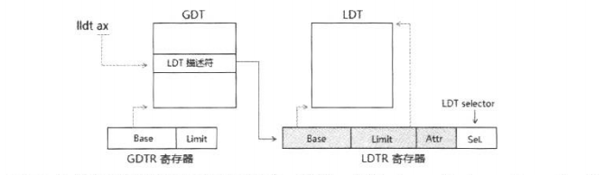
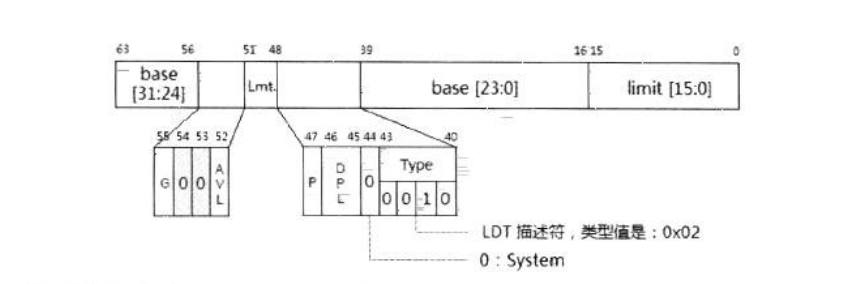
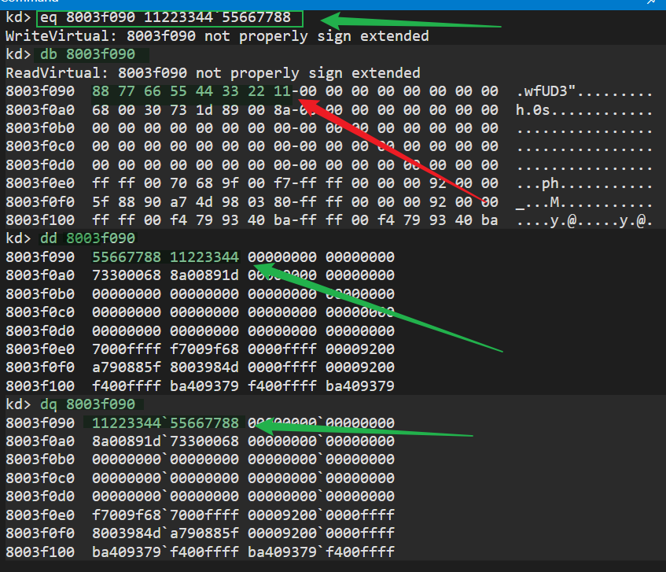
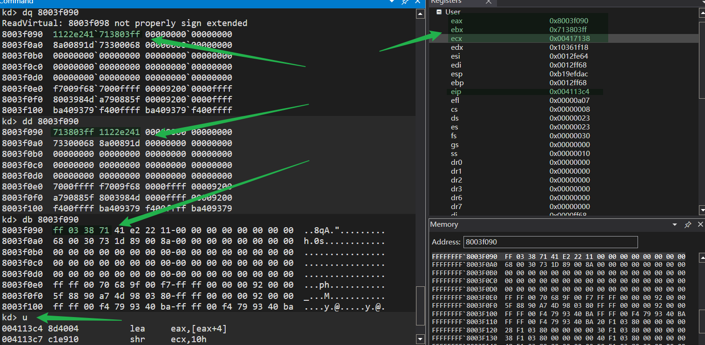
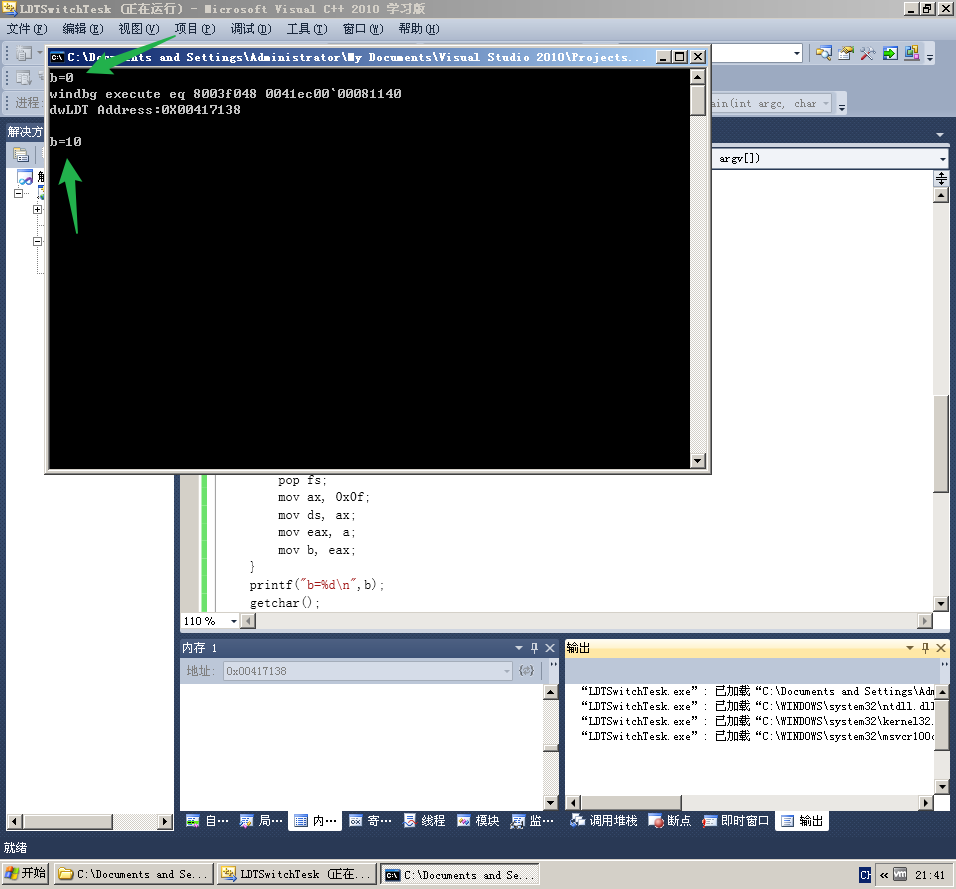
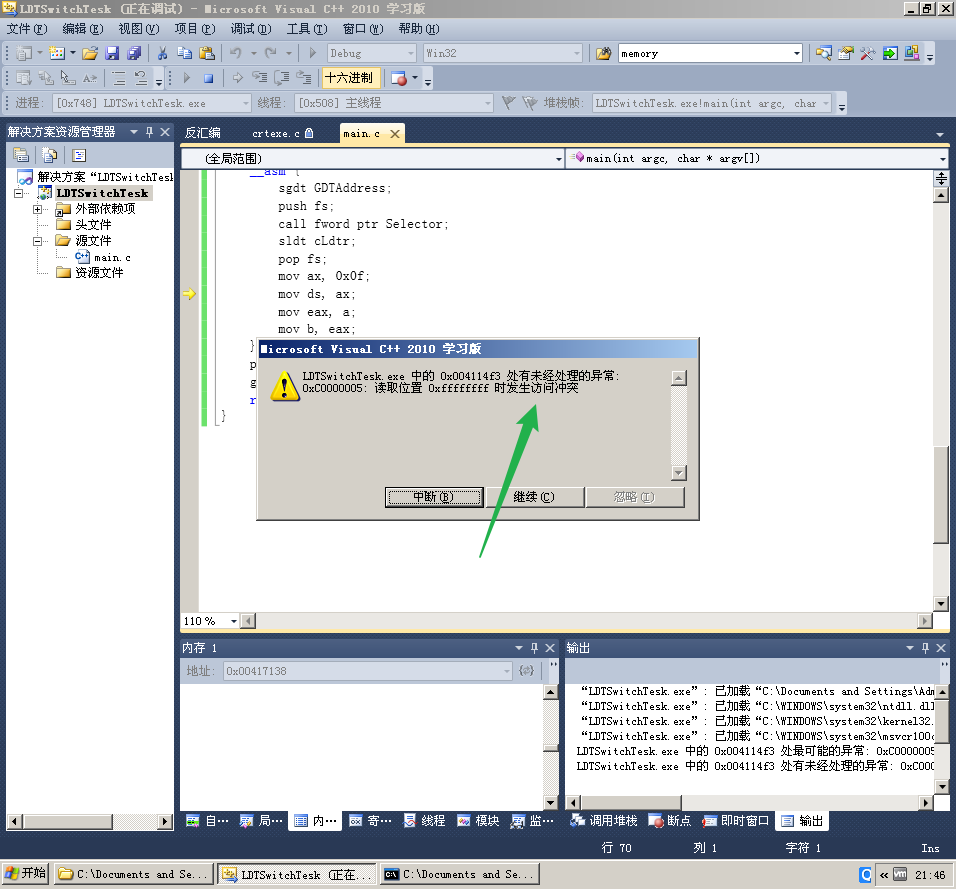

# 楔子
野路子出身，之前一直没看懂火哥的使用 LDT 的代码，看了看《x86/x64 体系探索及编程》研究了一下。
# LDT
Local Descriptor Table 是其中的一个描述符表，LDT 由 LDTR 的 base 域进行定位。

LDTR 的结构与段寄存器的结构是完全一致的，包括：base、limit、attribute 域，以及 selector 域，base、limit 和 atribute 组成 LDTR 的 Cache 部分，也是隐藏不可见的。像段寄存器一样，LDTR 需要使用 LDT 描述符进行加载，LDT 描述符只能存放在 GDT 中。 32 位的 LDTR.base 值能让 LDT 定位在 4G 的线性地址空间任何位置。 在 64 位模式下，LDTR.base 被扩展为 64 位。
# LDT 描述符
LDT 描述符属于系统级的描述符，它的结构与 TSS 完全一致。

LDT 描述符的类型是 0x02，S 标志位为 0 值，表示属于一个 system 描述符。
# LDTR 的加载
系统使用 LLDT 指令进行显式加载，或在进行任务切换时隐式地从 TSS 段里加载。
mov ax, LDT_SEL ; LDT selectorlldt ax
lldt 指令执行在 0 级权限里。处理器会检查以下内容:
selector 检查
对 selector 检查两个方面。
- 如果提供的 selector 是 Null selector，则会产生 #GP 异常。
- 如果 selector.TI=1，表示在 LDT 里，将产生 #GP 异常。
limit 检查
selector 是否超出 GDT limit 值。也就是 0x3ff。
LDT 描述符类型检查
能被加载到 LDTR 里的描述符必须如下。
- s 标志为 0，属于 system 描述符。
- P 标志为 1，表示在内存中。
- Type 值为 0x02，它是 LDT 描述符。
# 构 LDT 造段描述符
让 base=0x00000000，limit=0x3ff。
LDT 段描述符： 0000e200`000003ff
# 实验
知道了理论我们来实际使用一下。
火哥说把权限转移到 LDT 表中，写保护时别人很难检测…… 小白不懂，扩展一下思路。
这里有一个小细节需要注意:

其中红色箭头所指的内容，才是数据在计算机中的真实样子，其余的几种是 windbg 以数据宽度排好显示的。构建段描述符时要注意。
这是大端序、小段序排列的原因。
#include<stdio.h> | |
unsigned char dwLDT[0x3ff] = { 0 }; | |
// 这里为什么用 6 个字节存储 GDT 的地址我也不清楚 | |
unsigned char GDTAddress[6] = { 0 }; | |
__declspec(naked) void Func() { | |
__asm { | |
pushad; | |
pushfd; | |
// 取 GDT 表的地址 | |
lea eax, [GDTAddress + 2]; | |
mov eax, [eax]; | |
//eax = 8003f090 | |
lea eax, [eax + 0x90]; | |
// 取定义的 dwLDT 的地址 本程序中是 0X00417138，ecx = 00417138 | |
lea ecx, dwLDT; | |
// 将 7138 放进 ebx 的低 16 位中，bx = 7138 | |
mov bx, cx; | |
// 左移 16 位，将 7138 放进 ebx 的高 16 位中 ebx = 71380000 | |
shl ebx, 0x10; | |
// 把 0x03ff 放进 ebx 的低 16 位中，此时 ebx 的值为 0x713803ff | |
mov bx, 0x03ff; | |
// 给地址为 0x8003f090 内存空间赋值为： ff 03 38 71 | |
mov dword ptr ds : [eax] , ebx; | |
//eax 的值为 0x8003f094 | |
lea eax, [eax + 4]; | |
// 右移 16 位，ecx 的值为 0x00000041 | |
shr ecx, 0x10; | |
// 给地址为 0x8003f094 内存赋值为 0x41 | |
mov byte ptr ds : [eax] , cl; | |
// 给地址为 0x8003f095 内存赋值为 0x00e2 | |
mov word ptr ds : [eax + 1] , 0x00e2; | |
// 给地址为 0x8003f097 内存赋值为 0x | |
mov byte ptr ds : [eax + 3] , ch; | |
// 加载 LDT，使 LDTR 装载 LDT 选择子 | |
mov ax, 0x93; | |
lldt ax; | |
popfd; | |
popad; | |
retf; | |
} | |
} | |
int main(int argc, char* argv[]) { | |
unsigned char Selector[] = { 0,0,0,0,0x48,0 };// 准备调用门提权 | |
unsigned char cLdtr = { 0 }; | |
int a = 10, b = 0; | |
printf("b=%d\n",b); | |
*((unsigned int*)(dwLDT + 8)) = 0x0000ffff; | |
*((unsigned int*)(dwLDT + 0xc)) = 0x00cff300; | |
printf("windbg execute eq 8003f048 %04xec00`0008%04x\n", | |
((unsigned int)Func >> 0x10) & 0xffff, | |
(unsigned int)Func & 0xffff); | |
printf("dwLDT Address:%#010X\n", dwLDT); | |
getchar(); | |
__asm { | |
sgdt GDTAddress; | |
push fs; | |
call fword ptr Selector; | |
sldt cLdtr; | |
pop fs; | |
mov ax, 0x0f; | |
mov ds, ax; | |
mov eax, a; | |
mov b, eax; | |
} | |
printf("b=%d\n",b); | |
getchar(); | |
return 0; | |
} |
调试过程中的截图
程序执行完 mov dword ptr ds : [eax] , ebx 后，各寄存器的值与内存中 0x8003f090 处的数据

成功执行

修改一下 LDT 表中段描述符的 DPL*((unsigned int*)(dwLDT + 0xc)) = 0x00cff300;
==>>
*((unsigned int*)(dwLDT + 0xc)) = 0x00cf9300;
执行结果：

权限异常。
实验结束！